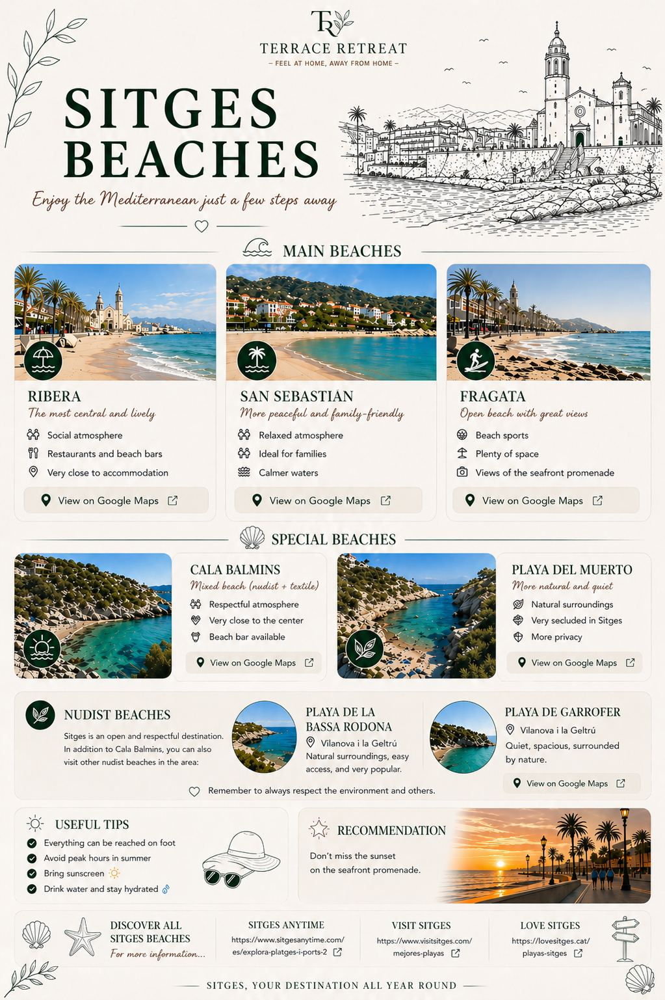

Ribera Google Maps
San Sebastian Google Maps
Fragata Google Maps
Cala Balmins Google Maps
Playa del Muerto Google Maps
Playa de Garrofer Google Maps
Sitges Anytime beaches
Visit Sitges beaches
Love Sitges beaches